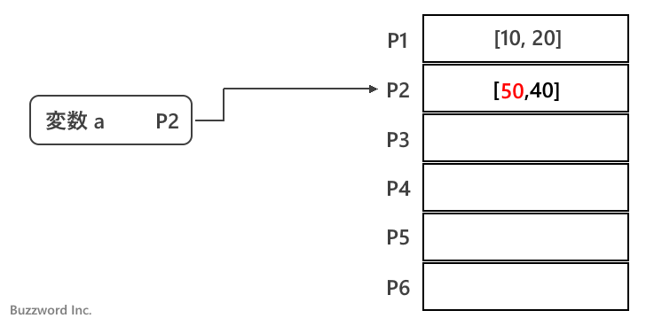
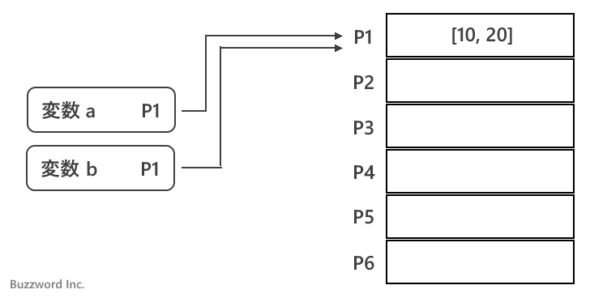

- Home ›
- JavaScript入門 ›
- 変数
変数への値の代入が値渡しか参照渡しかについて
変数に代入される値が数値や文字列といったプリミティブ型の値だった場合には「値渡し」と呼ばれるような処理が行われます。また変数に代入される値が配列や関数などのオブジェクト型だった場合は「参照渡し」と呼ばれるような処理が行われます。ここではプリミティブ型とオブジェクト型の値が変数に代入されるときに実際どのように行われるのかについて解説します。
プリミティブ型の値を変数に代入する
プリミティブ型の値というのは数値( 10 など)、文字列( 'Cup' など)、真偽値( true など)、 undefined 、 null 、シンボルとなります。これらの値を変数に代入した場合で考えてみます。
変数に値を代入したあとで別の値を代入する
変数 a を宣言し、数値の 10 を代入します。
let a; a = 10;
すると数値の 10 が保管される場所が確保され、その場所の位置が変数 a に保管されます。
先ほどの変数 a に別の値 20 を代入します。
let a; a = 10; a = 20;
すると新しく数値 20 が保管される場所が確保され、その場所の位置が変数 a に保管されます。
もともと入っていた値が保管されている場所に新しい値が保管されるのではなく、新しい場所が用意される点に注意してください。
複数の変数に同じ値を代入する
今度は変数 a に 10 を代入し、変数 b にも 10 を代入します。
let a, b; a = 10; b = 10;
すると数値の 10 が保管される場所が確保され、その場所の位置が変数 a に保管され、次に数値の 10 が保管される場所がもう一つ確保され、その場所の位置が変数 b に保管されます。
値が同じであっても、別々に変数に値を代入した場合はそれぞれ別の保管場所が用意されます。
変数に別の変数を代入する
今度は変数 a に 10 を代入し、変数 b に変数 a を代入します。
let a, b; a = 10; b = a;
すると数値の 10 が保管される場所が確保され、その場所の位置が変数 a に保管され、次に変数 a が保管している場所の位置が変数 b に保管されます。

先ほどの変数 b に別の値 20 を代入します。
let a, b; a = 10; b = a; b = 20;
すると新しく数値 20 が保管される場所が確保され、その場所の位置が変数 b に保管されます。変数 a が保管している場所の位置は変わりませんので変数 a が参照している値も変わりません。
プリミティブ型の値を変数に代入する場合、一時的に複数の変数が同じ値を参照することはありますが、変数に対する操作が別の変数が参照している値に影響を与えることはありません。
オブジェクト型の値を変数に代入する
オブジェクト型の値というのはプリミティブ型の値以外のもので、例えば配列やオブジェクト、関数、正規表現、などです。これらの値を変数に代入した場合で考えてみます。
変数に値を代入したあとで別の値を代入する
変数 a を宣言し、配列の [10, 20] を代入します。
let a; a = [10, 20];
すると配列の [10, 20] が保管される場所が確保され、その場所の位置が変数 a に保管されます。
先ほどの変数 a に別の配列 [30, 40] を代入します。
let a; a = [10, 20]; a = [30, 40];
すると新しく配列 [30, 40] が保管される場所が確保され、その場所の位置が変数 a に保管されます。
先ほどの変数 a が参照している配列に対してインデックス 0 の要素の値を 50 に置き換えます。
let a; a = [10, 20]; a = [30, 40]; a[0] = 50;
すると配列 [30, 40] の 0 番目の要素の値が 50 に変更されます。変数 a に保管されている場所の位置は変わりません。

もともと入っていた値に別の値を代入すると、新しい場所が用意される点はプリミティブ型と同じですが、オブジェクト型の場合は配列の要素のように格納されている値そのものを別の値に置き換えることができる場合があります。その場合は、変数が保管している場所の位置は同じですが、実際に保管されている値が変更される場合があります。
変数に別の変数を代入する
今度は変数 a に配列の [10, 20] を代入し、変数 b に変数 a を代入します。
let a, b; a = [10, 20]; b = a;
すると配列の [10, 20] が保管される場所が確保され、その場所の位置が変数 a に保管され、次に変数 a が保管している場所の位置が変数 b に保管されます。

先ほどの変数 a が参照している配列に対してインデックス 0 の要素の値を 50 に置き換えます。
let a, b; a = [10, 20]; b = a; b[0] = 50;
すると配列 [10, 20] の 0 番目の要素の値が 50 に変更されます。変数 a および変数 b に保管されている場所の位置は変わりません。変数 b に対する操作の結果、変数 a が参照している値も変更されることとなりました。
実際に下記のコードを実行してみると、変数 b が参照している値だけでなく変数 a が参照している値も書き換わっています。
let a, b; a = [10, 20]; b = a; b[0] = 50; console.log(a); >> [50, 20] console.log(b); >> [50, 20]
先ほどの変数 b に別の配列 [30, 40] を代入します。
let a, b; a = [10, 20]; b = a; b[0] = 50; b = [30, 40];
すると新しく配列 [30, 40] が保管される場所が確保され、その場所の位置が変数 b に保管されます。変数 a が保管している場所の位置は変わりません。
実際に下記のコードを実行してみると、変数 b だけが別の値を参照していることが確認できます。
let a, b; a = [10, 20]; b = a; b[0] = 50; b = [30, 40]; console.log(a); >> [50, 20] console.log(b); >> [30, 40]
オブジェクト型の値を変数に代入する場合、一時的に複数の変数が同じ値を参照することがある点はプリミティブ型の場合と同じですが、その時に例えば変数が参照している配列の要素を置き換えるなどの操作を行うと、変数に対する操作が別の変数が参照している値に影響を与える場合がある点に注意してください。
-- --
プリミティブ型とオブジェクト型の値が変数に代入されるときに実際どのように行われるのかについて解説しました。
( Written by Tatsuo Ikura )

著者 / TATSUO IKURA
初心者～中級者の方を対象としたプログラミング方法や開発環境の構築の解説を行うサイトの運営を行っています。